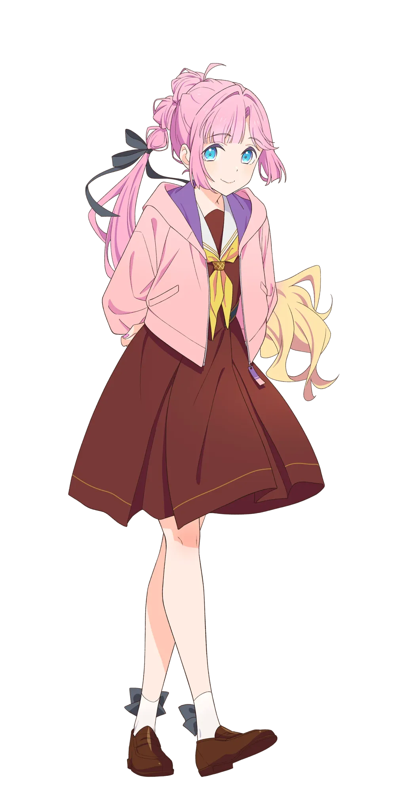
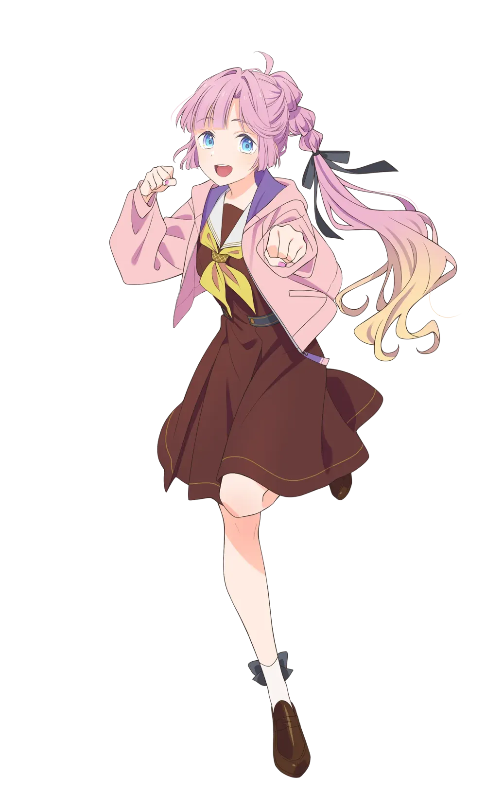
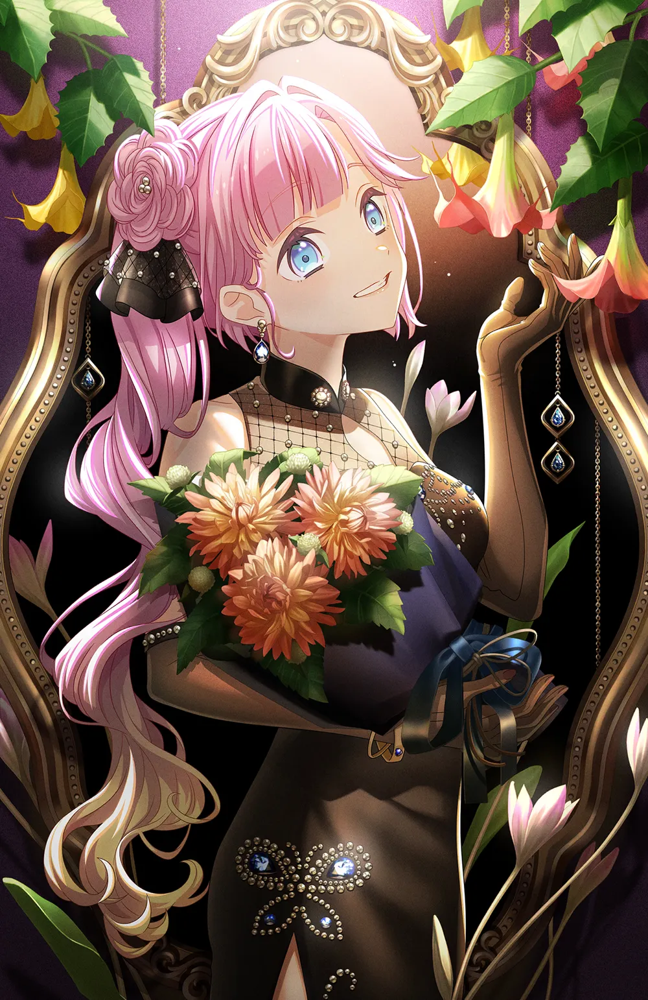
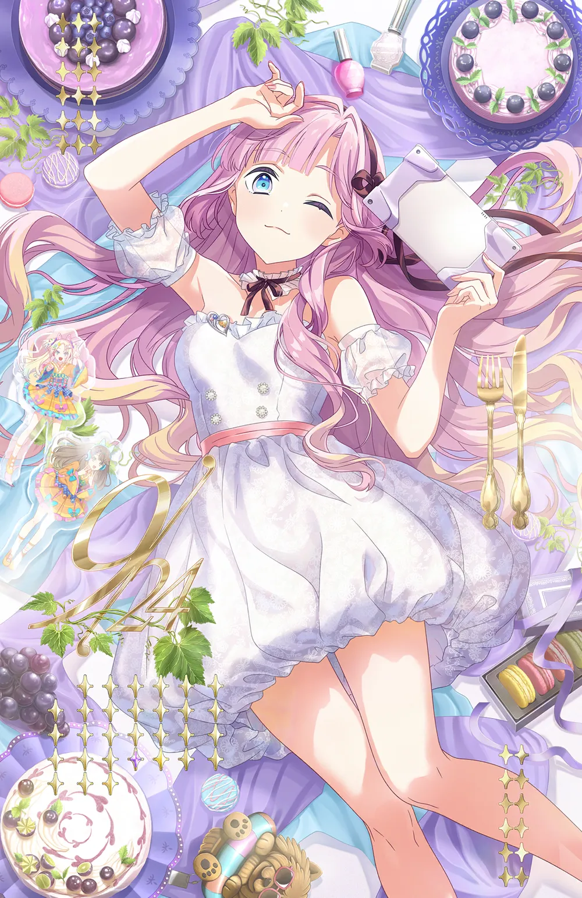

신장은 160cm로 일본 여성 기준으로 큰 편이며, 미라쿠라파크!의 선배인 메구미와 같다.
교복 위에 후드 자켓을 상시 걸치고 있다. 동복에는 분홍색, 하복에는 흰색. 성우는 땀을 많이 흘리는 편이라 교복을 입고 라이브를 하면 혼자만 땀에 흠뻑 젖은 모습을 볼 수 있다.
2.3. 보컬 스타일
미라쿠라파크!에서는 메구미와 함께 루리노의 목소리를 잡아 준다. 보컬 스타일은 텐노지 리나와 흡사하다. 특이하게 음을 연구개 쪽에서 울리는 듯한 발성을 쓰는데, 소리를 안으로 먹으면서 노래를 부른다.
3. 효빈광역시와의 관계 (희아복지재단 유니버스)
🎮 시장의 '하스노소라 최애캐'와 희아복지재단의 탄생
"인생이라는 하드코어 게임, 희아가 든든한 서포터가 되어 드립니다."
※ 효빈광역시장 박효빈(1996년생)과 실제 사용자 박효빈(2003년생) 모두가 끔찍하게 아끼는 하스노소라 부동의 최애캐.
3.1. 박효빈 시장의 '하스노소라 최애캐'
안요지 히메는 실제 사용자 박효빈(2003년생)의 하스노소라 최애캐이자, 이를 반영한 듯 세계관 내의 효빈광역시장 박효빈(1996년생) 역시 전폭적인 사심과 애정을 쏟고 있는 캐릭터이다. 시장의 노골적인 덕업일치의 결과물로, 효빈시와 덕빈북도 인프라 곳곳에 히메의 흔적이 새겨져 있다. 그 정점이 바로 효빈시 최고의 하이테크 복지 법인인 '희아(姬芽)복지재단'이다. 공식적으로는 이름이 예뻐서 지었을 뿐 히메와는 무관하다고 우기지만, 재단 로고부터가 완벽한 슈가 퍼플색이다.
3.2. 실버 레벨업 및 HP 리커버리 시스템
히메 특유의 '게이머' 마인드가 복지 행정과 결합되어 있다. 모든 시설에는 고성능 게이밍 공유기(Wi-Fi 6E)와 최고급 게이밍 체어가 기본 옵션으로 깔려 있다.
고송 노인일자리 지원기관: 어르신들의 재취업을 '전직(Class Change)' 개념으로 접근한다. 근무 실적에 따라 '시니어 포인트'를 파밍하게 한다.
내조 노인여가복지시설: 평범한 경로당이 아니라 아예 e스포츠 스타디움으로 개조되었다. 히메의 주력 게임인 테트리스와 뿌요뿌요가 정규 종목이며, 우승자는 '내조의 여왕(Hime)' 칭호를 얻는다.
HP 리커버리 센터 (보건 및 특수 복지): 결핵/한센시설 및 가정폭력상담소를 '세이프 존'으로 운영한다. "아프다고 접속 종료(생기 포기)하면 안 된다"며 멘탈 회복 퀘스트를 부여하고, 가해자는 즉각 영구 정지(경찰 공조) 처분을 받는다.
3.3. 리스폰 및 전직 센터 (객원 NPC 참여)
각 구별 지역자활센터에는 타 세계관(러브라이브, 뱅드림 등) 인물들이 객원 NPC 멘토처럼 배치되어 캐릭터 육성(자활)을 돕는다.
고무 지역아동센터: 아이들에게 "공부도 게임처럼 공략법이 있다"며 효율적 학습법을 가르친다. 숙제를 다 하면 닌텐도 스위치 30분 이용권을 주는 합리적인 시스템으로 전교 1등이나 챌린저 티어를 배출한다.
승남 지역아동센터: 배틀그라운드 대회가 정기적으로 열리며, 우승 상품은 진짜 치킨이다.
안양사 어린이집: 재단 한자인 '안요지(安養寺)'의 한국식 독음. 키즈 코딩 및 AI 조기 교육 특화 시설로, 꼬마들이 "이 장난감 코드 에러 났어요냥!"이라며 히메 말투를 흉내낸다.
3.5. 전용 노선 의혹 및 '안양사리' 밈
덕빈북도 군천시 을차면에는 '안양사리(安養寺里)'와 '희아리(姬芽里)'가 존재하는데, 이를 합치면 안요지 히메(安養寺 姫芽)와 100% 일치한다. 덕분에 조용한 농촌 마을이었던 을차면은 오타쿠들의 필수 성지순례 코스로 급부상했다.
더 나아가, 효빈시의 거대 국책 사업인 덕빈권 광역급행철도 B선 (HDTX-B)의 노선 색상이 안요지 히메의 퍼스널 컬러인 슈가 퍼플(#9d8de2)로 지정되었다. 철도 갤러리에서는 이를 아예 '히메 전용 익스프레스 (미라쿠라파크! 호차)'라 부르며, 군천시청을 안양사시청으로 개칭하라는 밈이 폭주하고 있다. 시장의 노골적인 덕질에 반발하는 혐덕 단체도 있었으나, 박효빈 시장이 "시위 주동자들은 터널 굴착기 청소부로 보내겠다"고 엄포를 놓아 조용해졌다는 전설이 있다.
ファンファーレ！！！ (팡파레!!!)
アイデンティティ(104期 New Ver.) (아이덴티티 104기 New Ver.) ニャオシグニャル (냐오 시그냘)
センパイ (선배)
스플릿 앨범
BLAST!!
Very! Very! COCO夏っ (Very! Very! COCO넛)
IcHiGo milK love
싱글
とーひょー☆スター！ (투표☆스타!)
5. 2차 창작 및 동인 이미지
본인의 소속 유닛이기도 한 미라쿠라파크!의 진성 오타쿠로 묘사된다. 데뷔 스쿠코네 방송에서 루리노와 메구미가 자신을 향해 애교부리는 것을 보고 굳어버리는 등 쿠쿠나 메이를 뛰어넘는 수준의 중증 오타쿠. 하는 말이나 행동이 실제 동인에 몸담은 사람들과 굉장히 흡사해[9] 가끔 무섭다는 말까지 나올 정도이다. 동인 쪽에서 자주 쓰이는 CP(커플링) 명을[10] 아무렇지도 않게 언급하는 것은 기본이요 루리노와 메구미를 향해 '고귀하다', '눈이 부시다' 등의 찬양어구를 마구 붙이며 '감히 내가 신성한 루리메구 사이에 끼어들 수 없다' 등의 어록을 생산하고 있다. 메구미가 졸업한 뒤에는 카호를 흐린 눈으로 보면 메구미가 보인다고 이야기할 정도로 중증으로 묘사된다.
텐노지 리나와 비슷한 외모에 코노에 카나타와 비슷한 느긋한 말투를 가지고 있어서 둘 사이의 딸이라는 드립을 하는 팬도 있다.
부모님이 안 계시고, 터울 많은 언니가 본인을 키워주었다는 언급이 있다.[11] 이후 부모님은 사망으로 확정되었다. 러브 라이브! 시리즈에서 한부모 가족인 경우[12]는 있었지만 양친이 모두 부재한 건 히메가 유일하다. 본가도 낡은 1DK[13][14]라는 언급이 있어 하스노소라는 물론이고[15] 시리즈 내에서도 손꼽히게 상당히 암울한 유년기를 보냈을 것으로 추정되어 이를 다룬 2차 창작도 종종 보인다. 이 때문인지 동기생들에 비해 정신적으로 제일 성숙한 모습을 보여준다.
아뇨자라시(あにょざらし): 바다표범과 엮은 2차 창작 캐릭터.[16] 2025년 3월 방송된 위드미츠 '메구 쨩에게 감사!' 때 화이트보드에 그려진 히메 그림이 묘하게 바다표범을 닮았던 것이 점점 네타 캐릭터화 된 것이며, 이제는 아예 히메가 직접 그릴 정도로 반쯤 공식화 되었다. 울음소리는 "아뇻!"(あにょっ！).
6. 커플링
오사와 루리노 (히메루리/루리히메/105기 미라쿠라파크!): 히메의 최애 아이돌 1호. 루리노와는 FPS를 좋아한다는 공통점이 있다. 게임 대회 우승자 출신인 히메의 실력이 매우 뛰어날 것으로 보인다.
후지시마 메구미 (히메메구/메구히메): 히메의 최애 아이돌 2호. 메구미는 신입 부원을 모집하겠다며 자신의 아크릴 스탠드를 미끼로 함정을 팠는데 히메가 걸려들었다. 둘 다 인터넷 방송을 한다는 공통점이 있다.
루리메구 (미라쿠라파크!): 히메가 게임과 더불어 가장 좋아하는 조합. '인기 조합 선배 + 아이돌 오타쿠 후배'의 유닛 구성이라 Liella!의 유닛 CatChu!가 생각난다는 의견이 있다.
카치마치 코스즈 (히메스즈/스즈히메): 서로 대비되는 점이 많은 커플링. 서투르고 자신감이 부족한 코스즈는 재능과 자신감이 넘치는 히메를 부러워하고, 언니와 단 둘이 자란 히메는 대가족에 둘러싸여 자란 코스즈를 부러워하는 식으로 서로를 동경하는 관계로 묘사하는 팬층이 있다.
히노시타 카호 (히메카호/카호히메): 메구미가 졸업한 이후, 히메는 메구미와 비슷한 점이 많은 카호에게서 메구미의 모습을 찾는다.
게이머라는 설정이 있어서 같은 게이머인 리나와 많이 엮인다. 리나와 진검승부를 하는 히메의 2차 창작 만화가 꽤나 자주 나온다. 다만 리나의 캐릭터는 '게임 잘하는 프로그래머'에 가까워서 실력은 히메가 살짝 위로 묘사되는 일이 많다. 이외에도 요시코, 렌 등과 함께 그려지기도 한다.
똑같은 스쿨 아이돌 오타쿠인 메이와도 드물게 엮인다. 종종 메이가 스미카논을 열정적으로 좋아하는 2차 창작이 나오는데 이러한 구도가 히메와 매우 비슷하다.
7. 캐릭터 상품
세가 누이 (교복 Ver. / Hip, hip, hooray! Ver.): 2024년 6월 세가 럭키 온라인 쿠지로 10cm 봉제인형이 발매되었다. 2025년 6월 105기 멤버 누이 발매와 함께 재판되었고, 2026년 8월 7일 Hip, hip, hooray! 의상 버전이 발매되었다.
스트리머 활동명 '츠마요지'는 일본어 이쑤시개(爪楊枝つまようじ)와 발음이 같다. 성인 '안요지'를 살짝 비틀어 지은 활동명이다.
성인 '안요지'는 안양시의 유래가 된 절 안양사와 같은 한자어로, 누마즈시 우치우라에도 이 이름을 딴 안요지가 있다. [위치] 선샤인 성지순례차 온 이들이 쉽게 다녀갈 수 있다. 이로 인해 한국 팬덤에서는 '안양시 공주', '난 경기도 안양의 안요지 히메다' 같은 애칭과 드립이 나왔다. 게다가 취미가 한국 하면 유명한 온라인 게임에, 좋아하는 말도 한국에선 스타크래프트 덕에 알려진 GGWP라 한국 팬덤에서 호감도가 높다. 안양공주와는 관계없긴 한데 러브라이버들한테 안양공주라고 하면 다 알아듣는다.
게임 대회 우승 경력으로 입학했다는 묘사로 보아 e스포츠 특기생으로 추정되며 주종목은 발로란트로 짐작된다.
공식 넘버는 9번. 단신이 많았던 역대 9번 캐릭터 중 독보적인 최장신이다.[17][18]
라디오에서의 언급에 따르면 카가시 출신이다.
2026년 카호, 사야카, 루리노가 속한 103기가 졸업하고 106기 후배 3명이 공개되면서 최고참 선배가 되었다.
담당 성우인 쿠루스 린은 실제로 스스로 게이밍 PC를 맞출 정도로 게임이 취미이고, 아이돌 및 버츄얼 유튜버로 활동하는 등 히메가 가지고 있는 설정 대부분을 실제로 경험했었다.
8.1. 프로필 일러스트
1학년 (104기)
2학년 (105기 / 극장판)

'">

'">
'">
104기 스탠딩 / 아이콘
105기 스탠딩 / 아이콘
극장판 스탠딩 / 아이콘
8.2. 생일 굿즈/일러스트
2024년 (2024.09.24.)
2025년 (2025.09.24.)

'">

'">
2024년 생일 기념 카드 일러스트
2025년 생일 기념 카드 일러스트
[1] 헵번식 로마자 표기법에 따른 표기는 Hime An'yōji.
[2] 리얼타임으로 흘러가는 하스노소라 프로젝트 특성상 매년 생일이 지나면서 나이가 바뀌었다.
[3] 활동기록 105기 8화 PART 8에서 히메의 입으로 직접 '내가 어렸을 때 먼 곳으로 가셨다'는 언급이 나온다.
[4] 극장판 프로필에서 추가.
[5] Good Game Well Play의 약자로, 흔히 GG로 쓰이는 그 표현.
[6] Even. 전교과를 동일하게 좋아한다.
[7] 여담이지만 니지가사키 엠마 베르데의 솔로곡 La Bella Patria에도 "크게 울리는 자신의 마음에 거짓말을 하는 건 정말 어려워"라는 가사가 있다.
[8] 또한 코즈에와 히메 둘 다 처지고 둥근 눈매를 가지고 있어 닮았다는 이야기를 듣기도 한다.
[9] 특히 일본의 트위터 계열.
[10] 프로젝트 특성상 캐스트들의 실제 어투 등이 짙게 묻어나오는 하스노소라로 넘어오면서 자주 간과되는 사실이지만 노조에리, 니코마키, 유우뽀무 등의 커플링명은 캐스트들이 아주 가끔가다 언급했을 뿐, 작품 세계관 내에서는 단 한 번도 언급된 적이 없다.
[11] [무로자키 격자] 안요지 히메 특훈 대사에서.
[12] 니코, 렌, 루리카. 그마저도 니코는 TVA에서는 관련 설정이 모호하게 표현되었다.
[13] 일본에서 분리형 원룸을 부르는 명칭.
[14] 이미지가 잘 생각나지 않는다면 짱구는 못말려의 와르르맨션을 생각하면 될 듯 하다.
[15] 애초에 하스노소라 여학원 자체가 아가씨 학교에 가깝다. 히메는 게임 대회 우승 경력으로 특기생 제도를 통해 입학했다.
[16] 일본어로 바다표범이 '아자라시'(あざらし)다. 원본 아뇨자라시는 루리노가 그렸다.
 쿠루스 린
쿠루스 린